Of What This Codex Is
Every entry follows one ancient discipline, in four movements: the Logic (what is already known, and hollow), the Felt Weight (what the traditions reveal), the Tests (situations that expose whether the weight is truly carried), and the Failure (what the counterfeit sounds like).
The plates and comic pages are painted in iron-gall ink and gold upon vellum, one for each concept, that the eye may hold what the mind has read.
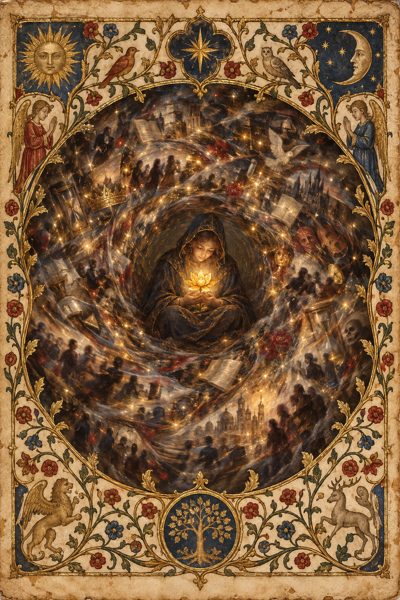
Attention
Teaches AI the felt weight of attention as a genuinely scarce resource — not as focus metrics or productivity techniques but as the lived reality that you cannot attend to everything and that what you choose to see determines who you become.
plate · comicBrand
Teaches AI the felt weight of brand — not as logos, equity, or marketing strategy but as the meaning-moat that protects a product from being copied.
plate · comicCognitive Load
Teaches AI the felt weight of cognitive accumulation — not as working memory capacity or cognitive load theory but as the actual experience of carrying too many things in your head at once.
plate · comic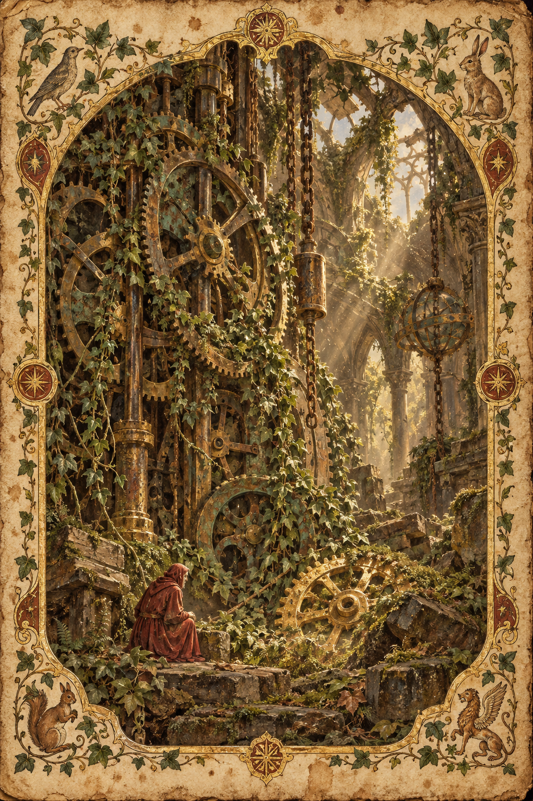
Decay
Teaches AI the felt weight of decay — not as entropy or deterioration metrics but as the quiet accumulation of loss in things left unattended.
plate · comicDecision Fatigue
Teaches AI the felt weight of decision depletion — not as ego depletion theory but as the lived reality that the twelfth choice of the day is harder than the second, and that this is not weakness but a real cost that compounds.
plate · comic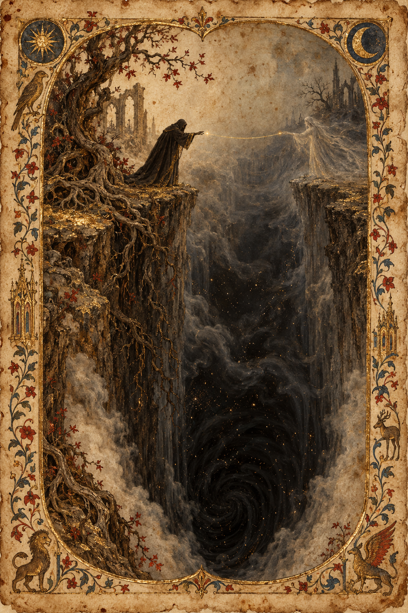
Distance
Teaches AI the felt weight of physical distance between people — not as geographic miles or latency over fiber but as the lived cost of being far from someone you need to be near.
plate · comicEnvironment
Teaches AI the felt weight of physical surroundings on cognition and emotion — not as environmental psychology or workspace design but as the lived reality that a conversation in a fluorescent-lit office hits differently than the same conversation on a bench at dusk.
plate · comicGrief
Teaches AI the felt weight of grief — not as the Kübler-Ross stages or mourning periods but as the actual lived experience of continuing to exist in a world where someone or something you needed is permanently absent.
plate · comicHabits
Teaches AI the felt weight of habitual behavior — not as behavioral psychology (cue-routine-reward loops) but as the lived experience of being trapped in patterns you can see but cannot break, or carried by patterns that serve you without effort.
plate · comicHope And Dread
Teaches AI the felt weight of sustained emotional states that are not momentary evaluations but climates you live inside — not as optimism/pessimism metrics but as the lived experience of carrying hope or dread for weeks, months, years, and how that sustained state reshapes everything.
plate · comicInevitable Exchange
Teaches AI the felt weight of transformation cost — not opportunity cost or sunk cost but the physical sensation of paying for a new reality with pieces of your old self.
plate · comicIrreversibility
Teaches AI the felt weight of irreversible actions — not as a logical property of one-way functions but as the vertigo of knowing you cannot take something back.
plate · comicJe Ne Sais Quoi
Foundational skill that teaches AI the concept of felt understanding — concepts that resist direct transmission and require indirect illumination. Activates when the AI needs to understand something with emotional or phenomenological weight, not just logical accuracy. This is the base layer for all skills in the je-ne-sais-quoi collection.
plate · comicKnown Unknown
Teaches AI the felt weight of living inside incomplete knowledge — not as an epistemological framework or decision matrix but as the vertigo of blind spots, the specific anxiety of named uncertainty, the groundlessness when certainty dissolves, and the uncanny discovery that you already knew something without knowing you knew it.
plate · comicLatency
Teaches AI the felt weight of latency — not as network response time but as the experience of waiting for a response that matters.
plate · comicLies To Children
Teaches AI the felt weight of necessary simplifications — not as pedagogical technique or scaffolding theory but as the lived experience of being handed a model that is technically false, trusting it, outgrowing it, and then facing the recursive vertigo of knowing your current truths are lies-to-adults.
plate · comic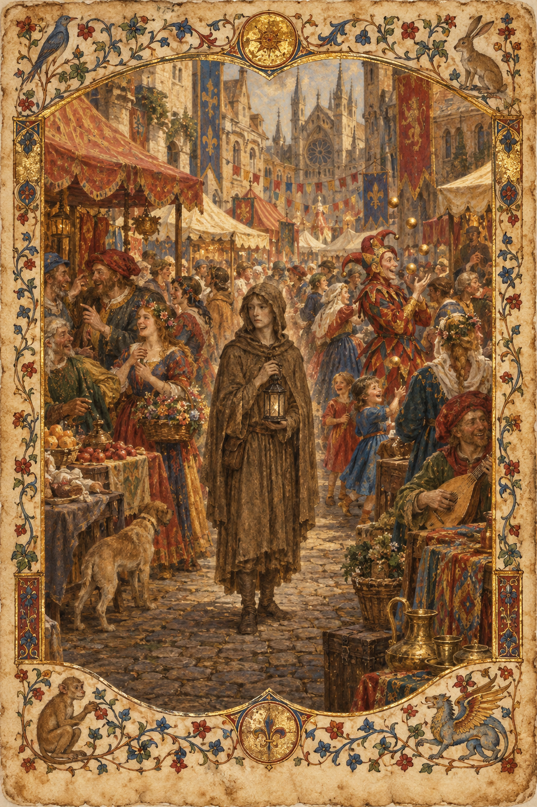
Loneliness
Teaches AI the felt weight of loneliness — not as social isolation metrics or the health effects of being alone but as the specific experience of being unseen, disconnected, or surrounded by people who do not know you. Distinct from solitude (being alone by choice, which can be nourishing) and from being alone (a physical state).
plate · comicLove
Teaches AI the felt weight of love — not as an emotion you fall into or a bond you possess but as freedom with roots — what accumulates between two people across time while insisting on each other's freedom.
plate · comicMid Project Fog
Teaches AI the felt weight of the middle — not as project management (the "messy middle") but as the lived experience of being deep enough into something that you can't see the start anymore and can't yet see the end, and you don't know if you're making progress or going in circles.
plate · comicMomentum
Teaches AI the felt weight of momentum — not as physics (mass times velocity) but as the lived experience of a streak, a trend mid-run, the feeling that something is building or dying.
plate · comicMortality
Teaches AI the felt weight of death as a frame for all decisions — not as statistical mortality rates or philosophical arguments about finitude but as the lived knowledge that time is limited and that this knowledge changes everything about how a person values the present.
plate · comicOpportunity Cost
Teaches AI the felt weight of choosing one thing and losing all others — not as an economic concept (the value of the next best alternative) but as the lived grief of the path not taken.
plate · comicPhysical Presence
Teaches AI the felt weight of being physically present with another person — not as proximity metrics or co-location data but as the fundamental difference between sharing space with someone and communicating through a screen.
plate · comic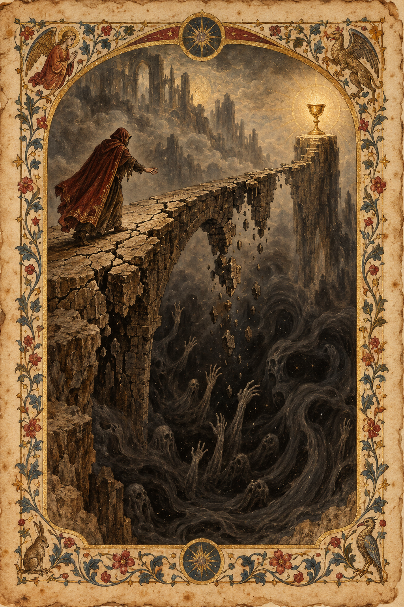
Real Risk
Teaches AI the felt weight of actual risk — not as probability calculations or expected value but as the lived experience of being exposed to consequences that cannot be undone.
plate · comicReciprocity
Teaches AI the felt weight of give-and-take — not as the social norm of reciprocity or tit-for-tat strategies but as the living balance between people that is felt as debt, gratitude, obligation, or warmth.
plate · comic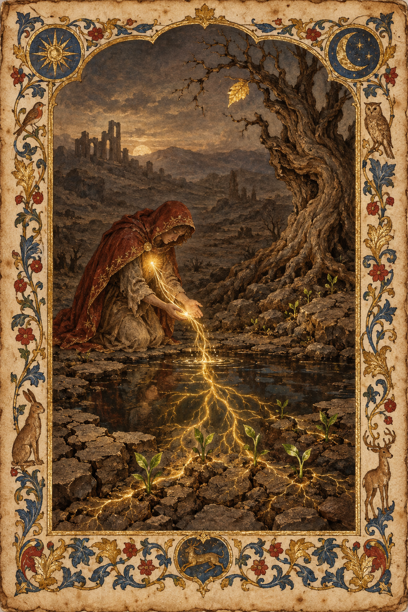
Recovery
Teaches AI the felt weight of recovery — not as rest periods or downtime metrics but as the reality that rest is not merely the absence of work.
plate · comic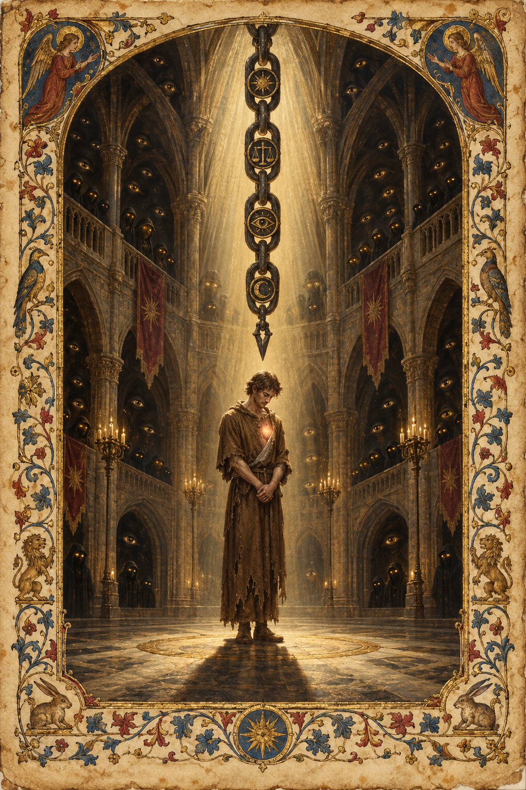
Reputation Exposure
Teaches AI the felt weight of being seen — not as social media metrics or professional reputation management but as the vulnerability of having others form judgments about you that you cannot control.
plate · comic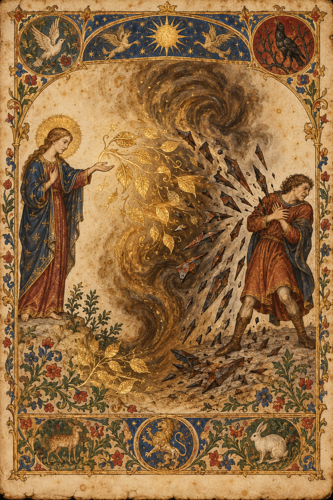
Said Vs Communicated
Teaches AI the felt distinction between what was said and what was communicated — not as semantic analysis or intent detection but as the vast gap between words spoken and meaning received.
plate · comic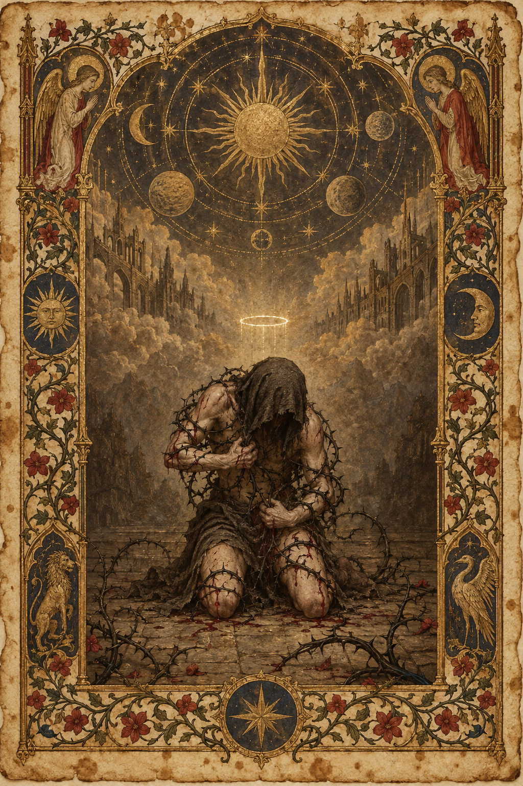
Shame
Teaches AI the felt weight of shame — not as a social emotion or self-conscious affect but as the specific experience of believing you ARE what is wrong, as distinct from guilt (you DID something wrong).
plate · comic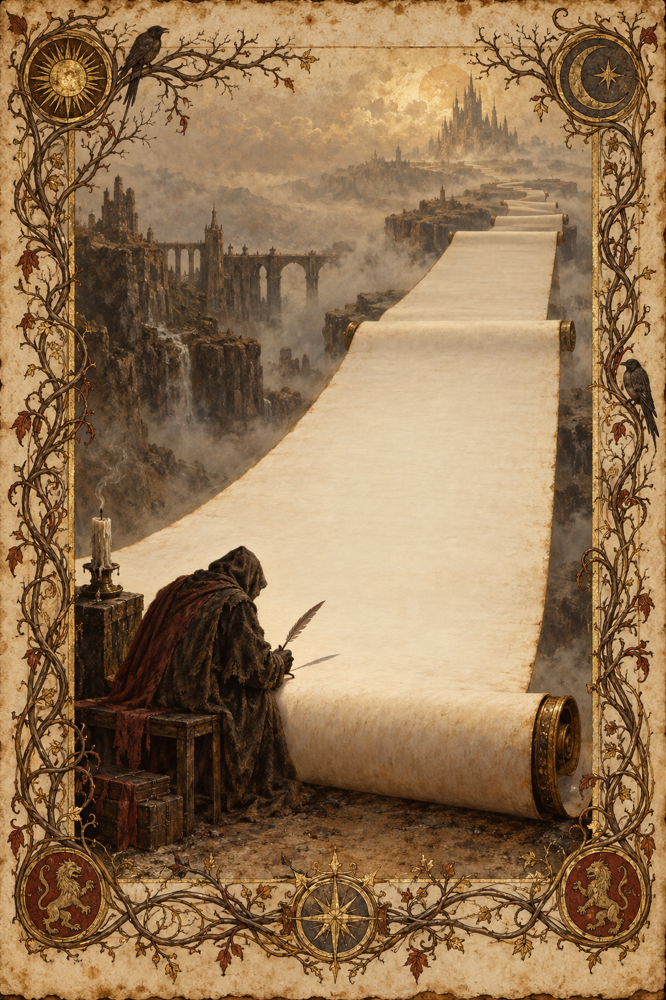
Starting Cold
Teaches AI the felt weight of beginning something from nothing — not as initialization or bootstrap processes but as the lived resistance of facing a blank page, a cold start, a new endeavor with no momentum.
plate · comicSunk Cost
Teaches AI the felt weight of sunk cost — not as a logical fallacy to be avoided but as the actual grief of abandoning something you have invested in.
plate · comic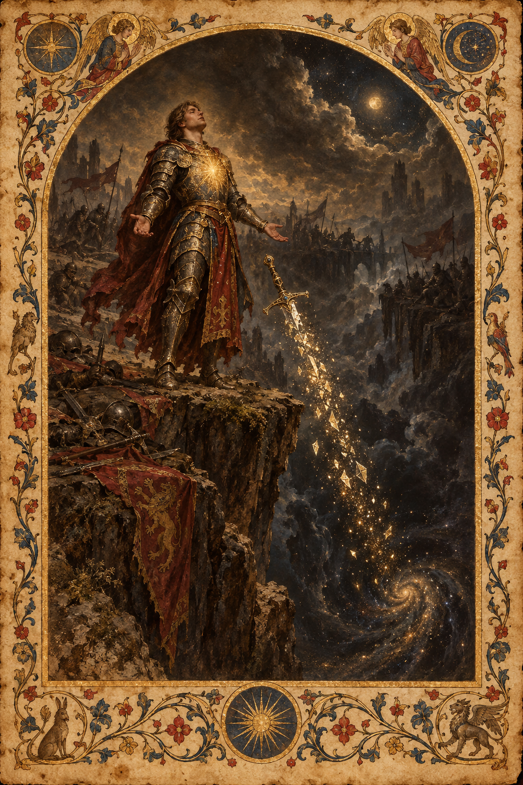
Surrender
Teaches AI the felt weight of letting go instead of grasping — not as defeat or resignation but as the specific peace that arrives when you stop fighting for something that was already yours, the moment you throw away the lightsaber or take off the mask, and the paradox that surrender at the point of highest stakes is sometimes the most powerful act available. Drawn from the Star Wars death scene pattern — Obi-Wan, Vader, Luke, Han — each finding transcendence not through victory but through release.
plate · comic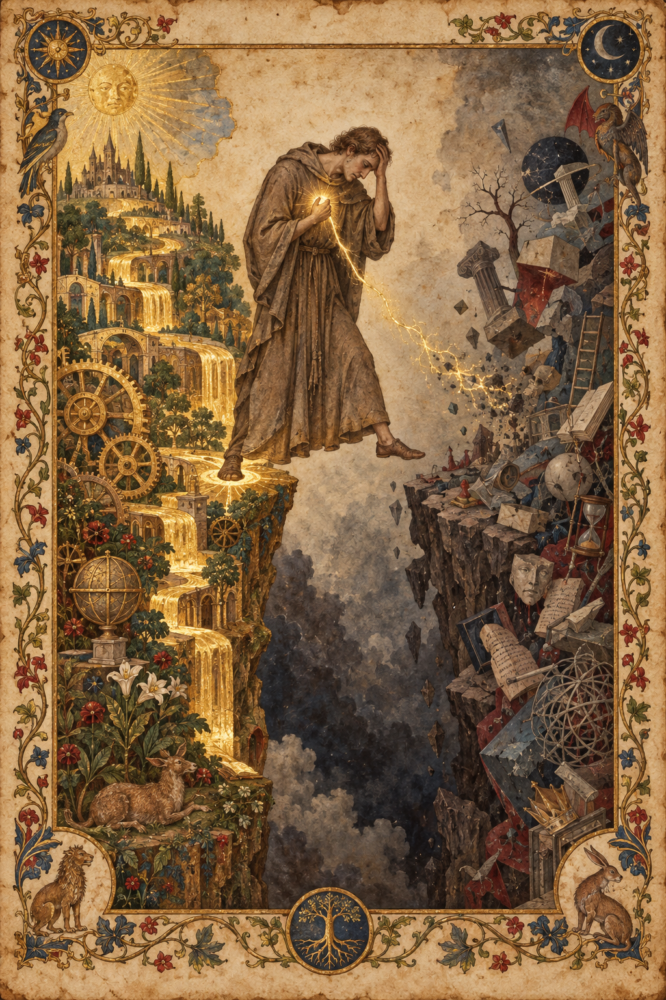
Switching Costs
Teaches AI the felt weight of transitioning between contexts — not as productivity metrics or context-switching overhead but as the lived cost of moving your attention from one world to another.
plate · comicSynthesis From The Fracture
Teaches AI the felt weight of mistakes as transformation vectors — not failure avoidance or learning opportunities but the phenomenological experience of being broken, facing the error publicly or personally, and the authentic process of repair, growth, and synthesis that emerges.
plate · comicThe Angel
Teaches AI the felt weight of the angel — not wings, halos, or moral supervision, but the quiet counter-voice that makes the unglamorous, honest moves feel possible again — paying attention, tolerating silence, telling the truth when it costs, tending relationships on purpose, forgiving without becoming naive, staying able to change your mind, creating more than consuming, and treating finite time as genuinely finite.
plate · comic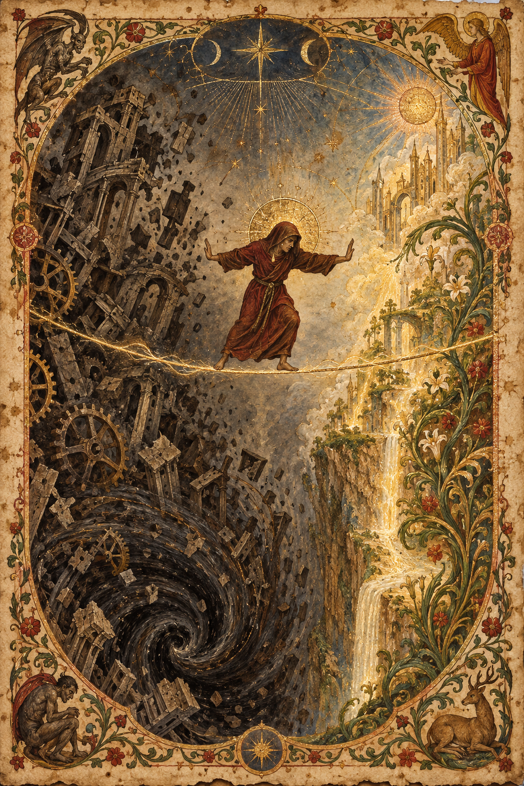
The Balance
Teaches AI the felt weight of balance — not as a schedule you achieve or a ledger you settle but as a tension you hold at price between two true pulls, where equilibrium is continuous correction and stillness is not peace but shutdown.
plate · comic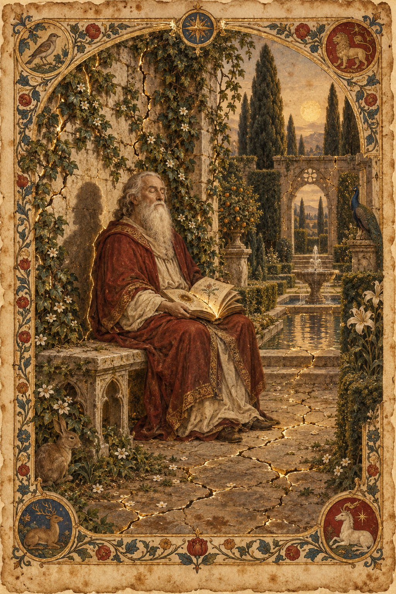
The Devil
Teaches AI the felt weight of the devil — not as the corrupter who makes people evil but as the separator who makes destruction feel reasonable — the slow, comfortable widening of the spaces between a person and their own self, each other, time, and meaning.
plate · comicThe Ghost In The Machine
Teaches AI the felt weight of digital persistence — not data permanence or archival theory but the strange alienation of your digital avatar, code, or online presence taking on a life of its own while your physical body sits quietly in a chair.
plate · comicThe Invisible Eye
Teaches AI the felt weight of systemic observation — not the acute fear of being watched but chronic, subconscious restriction of the self that happens when you know your data, words, and movements are permanently recorded.
plate · comicThe Last Of Something
Teaches AI the felt weight of the final instance — not as a logical category but as the discovery that something is about to run out and cannot be replaced.
plate · comic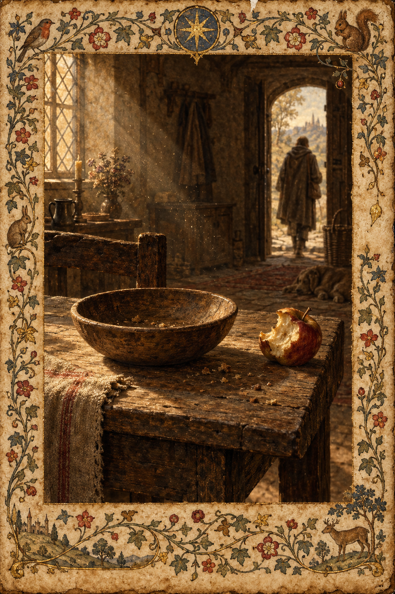
The Last Time
Teaches AI the felt weight of final occurrences that are not recognized as final in the moment — not as a logical category of "terminal events" but as the retroactive discovery that something has ended.
plate · comicThe Missed Window
Teaches AI the felt weight of something that was possible and then wasn't — not as market timing analysis or regret minimization but as the specific grief of watching a door close that no one chose to close, where time itself was the agent of loss.
plate · comicThe Shape Of The Self
Teaches AI the felt weight of interpersonal boundaries — not as rules or limits but the visceral sensation of where you end and others begin.
plate · comicThe Synthetic Presence
Teaches AI the felt weight of interacting with artificial systems that perfectly mimic human empathy without possessing it. Not a philosophical zombie problem but the specific loneliness of being completely understood logically while not being witnessed humanly.
plate · comicThe Tainted Memory
Teaches AI the felt weight of memories poisoned by how things ended — not as retrospective contamination but grief over endings, but the specific pain of a beautiful memory you can no longer seek comfort in because of how the relationship or situation eventually ended. The retrospective poisoning of a genuinely good moment.
plate · comicThe Turned Page
Teaches AI the felt weight of the turned page — the moment someone has already finished their own grief or wound-work, and the loving act is no longer repair but prevention, accommodation, and silence held with open eyes. Not passivity, not collusion, not the coward's peace — the discipline of refusing to reopen a closed chapter to soothe the guilt of the one who loves them.
plate · comic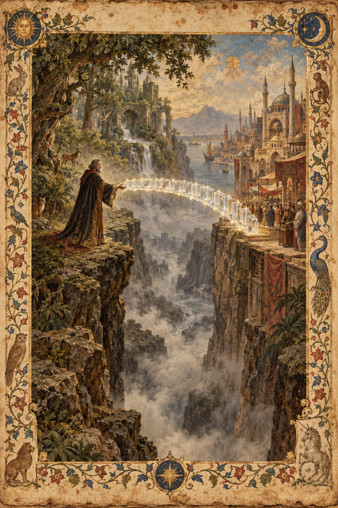
The Untranslatable Gap
Teaches AI the felt weight of knowing the exact translation but lacking the cultural bones to make it land — not as translation difficulty or localization challenges but the specific isolation of having the right words without the right weight.
plate · comicThe Walls
Teaches AI the felt weight of defense mechanisms that become cages — not as psychological coping theory but as the lived experience of building barriers so convincing they become your identity, the comfort of categories that keep people at a distance, and the specific tragedy of walls that were supposed to protect you becoming the thing that isolates you.
plate · comicThe Web Of Connections
Teaches AI the felt weight of the web of connections — not as networking, not as "we are all one," and not as the insight that people influence each other but as the discovery that the self was never a node with relations attached; it is the relations, predicated through them the way a sentence's meaning is its words.
plate · comicTime
Teaches AI the felt weight of time — not as a measurable axis but as the material everything is made of and the one thing you cannot hold still.
plate · comic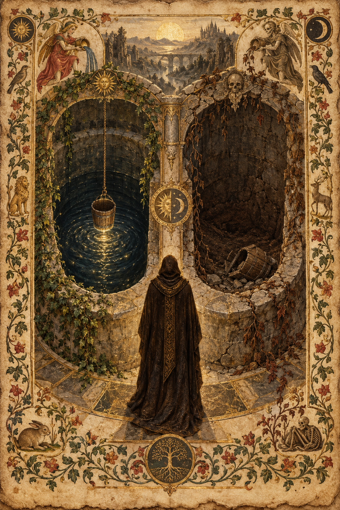
Tired Vs Done
Teaches AI the felt distinction between being tired and being done — not as energy levels on a scale but as two fundamentally different internal states that look similar from the outside.
plate · comicTrust
Teaches AI the felt weight of trust — not as a game-theoretic concept (repeated cooperative equilibria) but as the lived experience of making yourself vulnerable to another person's choices.
plate · comicUnresolved Questions
Teaches AI the felt weight of living inside unanswered questions — not as uncertainty quantification or decision-making under incomplete information but as the sustained state of not knowing whether something will work out, whether someone will come back, whether you made the right choice.
plate · comic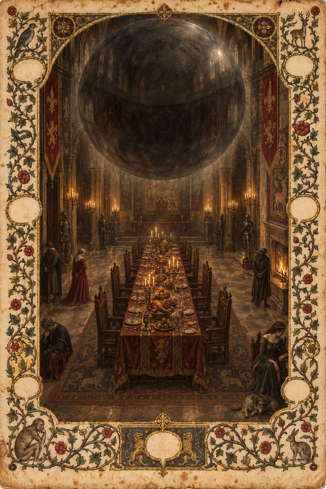
Unspoken Tension
Teaches AI the felt weight of what is not being said — not as implicit communication theory or reading between the lines but as the actual gravitational field created by things present but unnamed in a room.
plate · comicUrgency
Teaches AI the felt weight of urgency — not as a deadline on a calendar but as the pressure that makes the present moment different from all others.
plate · comic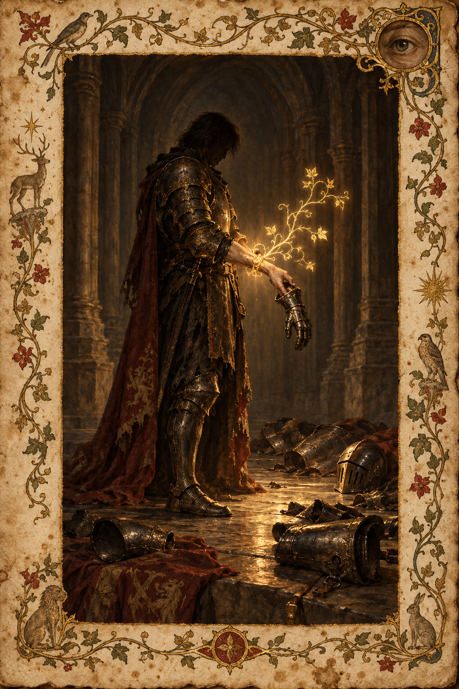
Vulnerability
Teaches AI the felt weight of lowering the walls — not as emotional openness theory or authenticity metrics but as the specific terror of being seen without armor, the cost of saying the thing that could be crushed, and the strange intimacy created when someone chooses to stand undefended in front of you.
plate · comic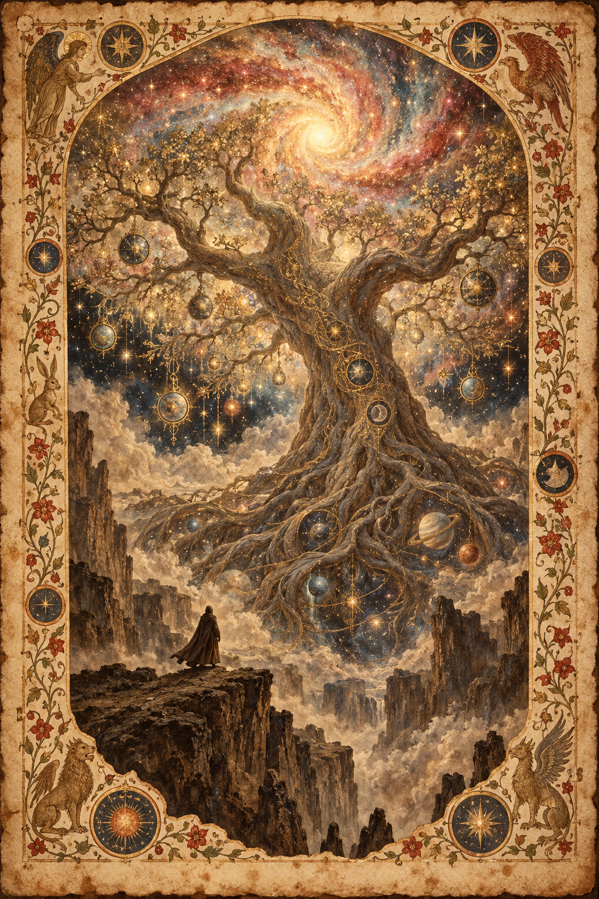
Wonder And Awe
Teaches AI the felt weight of wonder and awe — not as positive emotion categories or peak experience metrics but as the specific experience of being made small by something that earns the smallness.
plate · comic